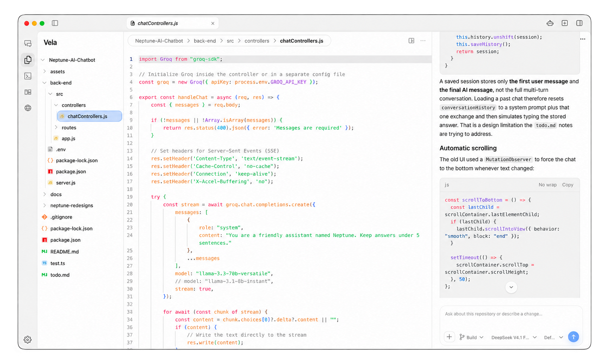

Code at home.
Browse your repository and edit with Monaco, tabs, and autosave.
Keep the editor, the conversation, and the changes in one desktop workspace.
Download for macOS
Open a repository. Give OpenCode a task. Follow the changes beside your code.
Browse your repository and edit with Monaco, tabs, and autosave.
Give OpenCode the task and follow the conversation beside your code.
Follow observed file changes and review per-file diffs when starting contents are available.
A desktop workspace that brings a Monaco editor, OpenCode sessions, an integrated terminal, and live file changes into one window.
Have OpenCode V2 available on your PATH before starting an agent session. The source setup guide is available on GitHub.
Agent mode tiles up to eight sessions. Each panel keeps its own conversation and context.